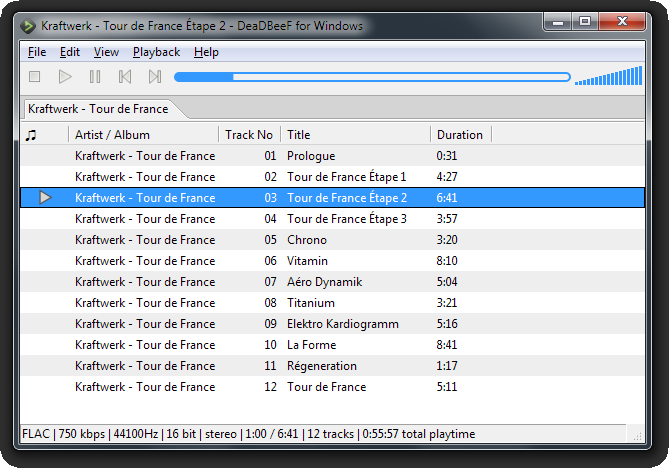
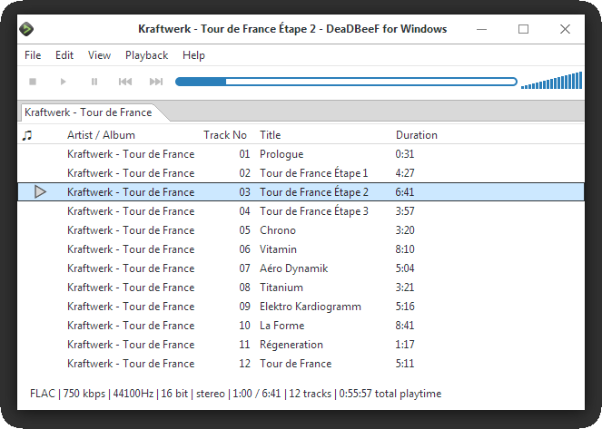

About
DeaDBeeF for Windows is a port of DeaDBeeF music player.
Features:
Supported formats:
- mp3
- flac
- vorbis
- opus
- wav and other PCM files(wav, aiff, etc.)
- aac
- m3u
- cue
- alac
- wma
- wavpack
- sid
- psf
- ffap
- tta
- adplug-supported files
- http and ftp internet streams, with ICY protocol support
- zip-packed music files
Misc features:
- Equalizer
- Hotkeys (global hotkeys not supported yet)
- Map actions to custom shell commands
- High quality resampler using libsamplerate
- Replay-Gain scanner
- last.fm scrobbler
ConverterWIP, only partially working
Other technical information:
- GPLv2 / ZLIB Licence
- GTK2 and GTK3 user interface
- Output using portaudio library
or using WASAPI(abandoned)
Missing features (compared to DeaDBeeF on linux)
- artwork
- OSD (On-screen display) notifications
- CD-Audio support
- mms
- ffmpeg
- gme, vtx, musepack, wildmidi, dca, dumb, shn, sc98
Screenshots
Windows 7
Windows 10
Downloads
Since 2020-07-06 DeaDBeeF provides automatic builds for Windows. You can find more information on DeaDBeeF Download page or you can download nightly builds directly from sourceforge.
Builds from DeaDBeeF for Windows project are kept as they were, but they will not be updated. Please use the builds from the links above.
All releases posted here are for 64-bit system (x86_64). Binaries are designed to work on Windows 7/8/10.
Links were last updated on 2020-07-06. In case links are not up to date, visit DeaDBeeF-for-Windows/deadbeef/releases (see above notice)
GTK2 + GTK3 (zip/portable)
GTK2 + GTK3 (installer)
Development
If you would like to compile DeaDBeeF for Windows from source or contribute please head to DeaDBeeF for Windows github page. We also have channel on DeaDBeeF's slack. Look up DeaDBeeF's README if you want to join.